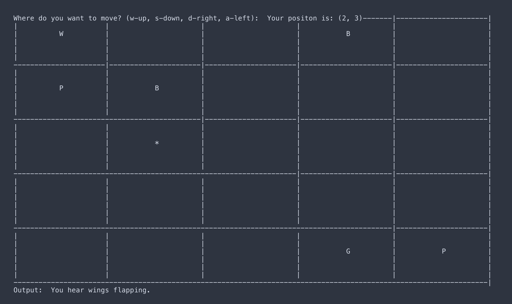

Oregon State Senior Capstone - Fuel Kiosk
Hunt the Wumpus is a cave CLI game that I made for a university assignment. The concept is very simple you are in square grid, the cave, in which you get to choose the size. You have to shoot
the Wumpus with an arrow, find the gold, and then escape exactly where you came in from. There is also other dangerous events in the cave such as bottomless pits and bat caves filled with bats. If
you walk into the Wumpus's room or a room with a bottomless pit in it you die. If you walk into a bat cave they pick you up and move you to random room in the grid regardless if whether it's occupied
by something. You have three arrows only and if you shoot all of them without hitting the wumpus you lose, and every arrow moves three rooms. Every time that you shoot an arrow there is a 75% chance
that the wumpus will move to another room that doesn't have an event. This also means it can move to the room your currently in still. Normally when playing the game you don't know where the objects are
but when you get near them you'll see an output message for each event one move away from you, and this can help you decide and even figure out where the events are. Although, for testing purposes I implemented
a debug mode in which you can see where the player and all the events are in the grid. The grid will looking something like this:

It's a very simple game, but looking at it from a design perspective there can be quite a bit of different aspects to account for. You can start to realize that the project would be a lot simpler
if we used objects and polymorphism over functional programming, and conveniently this assignment required the use of that. This is because if you look at the requirements for each of the different events
in the grid they all need to be able to output an event specific message when you are near them and an event specific action when the player moves into the event's room. Since their requirements are extremely similiar
we can make an abstract class with two purely virtual functions which handle those two requirements and requires each event class, which will derive this abstract class, to implement their own specific version of
these functions. Doing it this way will reduce a lot of the code we have to write and reuse. The event class will look something like this:
//this is the abstract or interface class for the events in the game
class Event{
protected:
//event type identifier
char const name;
public:
//allow child classes to call constructor with specfic name to identify type
//of event
Event();
Event(char);
//pure virtual funcitons
virtual std::string percept() const = 0;
virtual std::string encounter(Player&) const = 0;
//this is the getter which gets the name or type of the inherited class
char get_name() const;
//virtual destructor so the derived destructors are called
virtual ~Event() = default;
};
Additionally, this will also make adding events to rooms a lot easier. When implementing the grid I created a 2D vector of room objects which has different variables and methods to make the implementation easier.
Within each of these room objects I added an empty event pointer, which allows us to use polymorphism. When putting each event in a room I would choose random coordinates and make sure that either the player
wasn't in that room and the event pointer in that room was set to null, which means theres no event in there, and if it wasn't then I would choose a new position and check again. When I found a valid position for
an event I would then create a new derived event object on the heap and point that event pointer to the memory address of that object.
Now we have a bunch of different events in different rooms with there own implementation of the correct functions, but for my debug mode I need to be able to display a character so that I could tell what type of event
the object was without walking into it or being anywhere near it, and I implemented this using inheritance. Since each derived event inherited the event class I added a char const name attribute to the event class, as you can
see above, and made it so that it could only be set in the constructor, which means it would never change. I then made it so that whenever a derived event was constructed, since the event class is an abstract class it can't be
constructed by itself, it would call the event constructor with it's specific name for the event. For example Bats are 'B', Gold is 'G', and the Wumpus is 'W' and so on. Heres what the constructors looked like:
/*********************************************************************
** Function: Event::Event()
** Description: This is the defualt constructor for the Event class
** Parameters: NONE
** Pre-Conditions: no Event object
** Post-Conditions: Event object with a name of ' '
*********************************************************************/
Event::Event() : name(' ') {}
/*********************************************************************
** Function: Event::Event()
** Description: This is the paramaterized constructor for the Event
class
** Parameters: char name
** Pre-Conditions: no Event object
** Post-Conditions: Event object with name of char that was passed in
*********************************************************************/
Event::Event(char name) : name(name) {}
/*********************************************************************
** Function: Wumpus::Wumpus()
** Description: This is the default constructor for the Wumpus class and it
constructs an Event object and sets the name to W so that the game can tell which
Event this is when polymorphism is implemented
** Parameters: NONE
** Pre-Conditions: no Wumpus object
** Post-Conditions: Wumpus object with a const name of 'W'
*********************************************************************/
Wumpus::Wumpus() : Event('W'){}
This allowed me to print out the objects name irregardless of the event, for example I could just call event.name(), if the debug mode was set to true. Here's what the room and wumpus class look like, and keep in mind that all of
the derived classes look about the same:
//this is the class which represents each room in the grid
class Room{
private:
//room's position
int x;
int y;
//bool which sees is if it has the player in it
bool has_player;
//event pointer which will point to a derived event object if there is an event
Event* event;
public:
//constructor with position
Room(int, int);
//getters
bool get_has_event() const;
int get_x() const;
int get_y() const;
Event* get_event() const;
bool get_has_player() const;
//setters
void set_event(Event*);
void set_has_player(bool);
//destructor which frees the event pointer if it's pointing to something
~Room();
};
//this class inherits the event and represents the wumpus
class Wumpus : public Event{
public:
//constructor
Wumpus();
//these funciton override the event virtual functions and handle walking into the
//wumpus's room
std::string percept() const override;
std::string encounter(Player&) const override;
//destructor
~Wumpus();
};
Overall, this project was very benificial to my understanding of Object Oriented Programming, inhereitance, and polymorphism. It has also helped me understand the power of using these tools
as opposed to functional programming and the conciseness and reusability of this method. It allows programmers to write more concise and clean code, which is what every programmer should
strive for. I look forward to seeing more applications of this technique in the future, and i'm grateful to have another useful tool in my toolbelt. You can find the full code
here.
Comments
No comments found for this article.
This will take you to Github where you can then write, and post, your comment (it will show up on the page within an hour). You will need a Github account to comment.